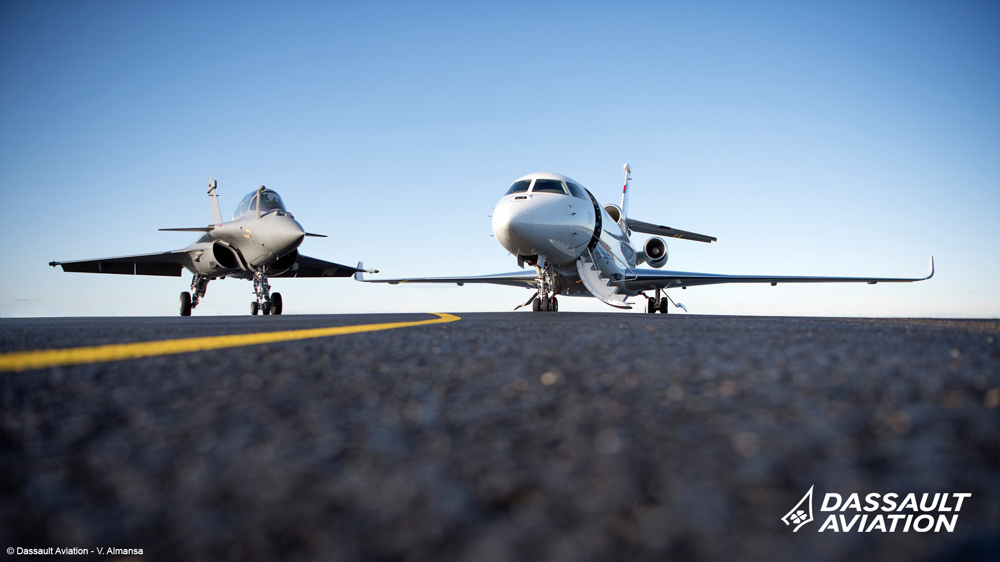

Logiciels C++ de gestion des données
C++ · CMake · Bash · Linux · Qt5 · WireShark
💻 Développement d'une suite de solutions comprenant :
🔹 Un script permettant d’écouter et de conserver en continu les données provenant de plusieurs interfaces réseau simultanément.
🔹 Un logiciel permettant d’émettre les données sauvegardées, sélectionnées par l’utilisateur.
🔹 Un logiciel permettant de recevoir les données et de vérifier l’intégrité des fichiers reçus.
🔄 Assurer la compatibilité du logiciel de rejeu des données de vol avec un nouveau système d’exploitation.
📠Rédaction de la documentation de conception pour le logiciel de rejeu des données de vol.
